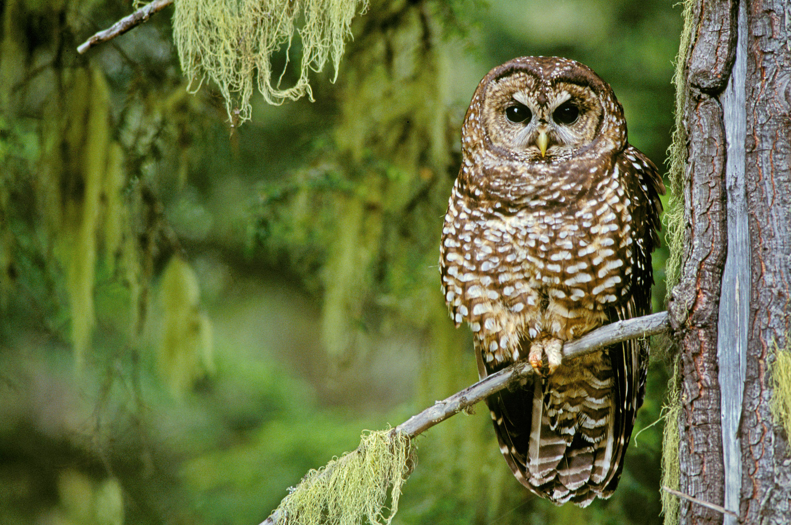
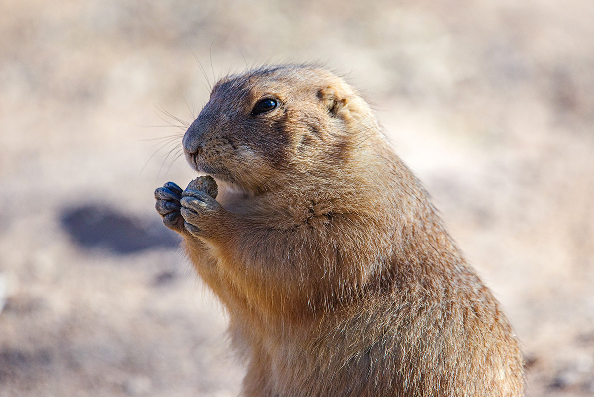

These are some of the animals we help and services that we offer.
| Animal | Care |
|---|---|
| Primates | sanctuary in Bexar County, Texas, that was incorporated in 1981 and provides lifetime care for 300 + animals, mostly primates, including 32 chimpanzees. |
| African elephants, giraffes, leopards, lions and rhinos | Connecticut trophy hunters will no longer be able to sell the body parts of the African elephants, giraffes, leopards, lions and rhinos they kill because Governor Ned Lamont signed the Big 5 African Trophies Act into law. Friends of Animals helped draft the legislation, also known as ‘Cecil’s Law.’ |
| Waterfowl (ducks and other birds) | Protections were strengthened by removing a requirement that artwork must promote hunting. This change helps shift public messaging away from hunting and supports long-term conservation efforts. |
| Wild Horses | Wild horses received legal protection through lawsuits aimed at preventing population reduction, roundups, and entry into the slaughter pipeline. These efforts help ensure they can live freely in their natural habitat. |
| Giraffes | Advocacy efforts focused on gaining Endangered Species Act protections for giraffes. This helps address threats like habitat loss, poaching, and trophy hunting by pushing for stronger legal safeguards. |
Advocacy
Protecting Endangered Species
The Endangered Species Act (ESA) has prevented the extinction for approximately 99% of species under its protection since its enactment in 1973.
FoA has submitted several petitions to U.S. federal agencies to gain protections for animals that are in danger of extinction largely due to human exploitation. Some of the species we have submitted petitions for include the following: giant devil ray, Egyptian tortoise, spider tortoise, flat-tailed tortoise, and long-tailed chinchilla. (We would love to hear of any experiences you have had with these animals. Please email us any stories you have observing these animals in respectful way.)
Friends of Animals’ petitions secured ESA protections for four populations of scalloped hammerhead shark, three rare parrot species, four species of sturgeon, and a distinct population of wild horses.
Friends of Animals has also submitted comments in support of listing giraffes, who are threatened by habitat loss, trophy hunting, poaching, climate change, mining and the bushmeat trade, under the ESA. Because giraffes have no protections in the U.S. hunters here are able to import giraffe animal parts for trophies and their body parts are also used for jewelry, pelts and other consumer items.
Protecting Elephants
These charismatic animals known for their massive size and intellect continue to decline in the wild. Unfortunately, they are continually exploited for entertainment and senseless products. Friends of Animals has submitted two petitions to protect elephants from this exploitation.
First, Friends of Animals submitted a petition with the U.S. Fish and Wildlife Service to restrict the ability of U.S. zoos to import African elephants. There is overwhelming evidence that ripping elephants from their families and homes in the wild to be put on display in zoos is traumatic and detrimental to the elephants’ physical and emotional health. It also has no value for the conservation of elephants in the wild.
Second, Friends of Animals submitted a petition to update U.S. regulations that completely fail to protect elephants from a growing demand for elephant skins that is driving the animals closer to extinction. Despite nearly world-wide regulations on the trade of ivory, there is thriving illegal and legal market in elephant skins. The amount of elephant skins legally imported into the U.S. is increasing dramatically and Friends of Animals seeks to put an end to this trade immediately.
Speaking Out Against Fish Farming
The Environmental Protection Agency (EPA) issued a permit for a new aquaculture facility to dump pollutants into the Gulf of Mexico. This facility is the first of its kind in the Gulf of Mexico, and too many uncertainties exist to approve this permit. Friends of Animals submitted a comment to point out risk with this facility, including the threat to endangered animals and the possibility to contribute to catastrophic outbreaks of algal blooms. Several pieces of federal legislation mandate that EPA pay attention to these issues and Friends of Animals asked EPA to further assess these areas before opening what it plans to be the first of many foreseeable aquaculture projects. Read our objections here.
Requesting Critical Habitat for Yellow Billed Cuckoos
As the climate in the American west becomes warmer and drier, many species struggle to adapt. The Yellow-Billed Cuckoo has lost roughly 90% of habitat that it needs to survive. This habitat loss stems from a variety of causes: invasive species, agricultural crops, conversion of land for livestock, and development. Gas and oil interests in the west hold heavy influence over what land becomes protected. Friends of Animals submitted comments to show that the Yellow Billed Cuckoo needs as much protection as possible and ask the U.S. Fish and Wildlife Service to conduct a full and thorough NEPA analysis of each designated site.
Defending the Arctic
The Arctic Refuge is one of the last truly wild places in the U.S. It is home to some of the most stunning populations of wildlife in the world including denning polar bears, porcupine caribou, grizzlies, wolves, wolverines, muskoxen, and more than 130 species of migratory birds. Congress recognized the need to preserve the area sixty years ago and it remained protected until recently when the Tax Cuts and Jobs Act of 2017 included a provision that opened the Arctic National Wildlife Refuge to oil and gas development. Not only would such development devastate wildlife in the area, it would also be a major step back from a safe and sustainable energy future. Friends of Animals has submitted multiple comments urging Congress and federal agencies to protect this area from destructive oil and gas developments and leasing.
Our Legal Actions
The Wildlife Law Program of Friends of Animals focuses on the defense of wildlife and their habitats throughout the world. Attorneys within the Wildlife Law Program utilize a variety of federal statutes to promote the rights of wildlife, including the Endangered Species Act, the Marine Mammal Protection Act, the National Environmental Policy Act, the Clean Water Act, the Wild Free-Roaming Horses and Burros Act, the Migratory Bird Treaty Act, and the Administrative Procedure Act, as well as state and local legislation where applicable. Our attorneys also work with international treaties like the UN’s Convention on International Trade in Endangered Species of Wild Fauna and Flora (CITES).
Quote
“This is a critical time for reforming our relationship with wildlife. Species are declining at an alarming rate, climate change is alternating the environment and human-wildlife interactions are inevitable. How we address these issues matters. We seek to ensure that the capabilities and lives of wild animals are considered by courtrooms and lawmakers around the world.”
— Jennifer Best, Wildlife Law Program Director
For the latest info about our work, check out our 2025 Director’s Report:
Our current work:
Wild Horse Litigation
Friends of Animals has become the leading national wild horse protection organization. We have brought and won more than a dozen cases to protect wild horses. Our lawsuits have stopped the U.S. Bureau of Land Management (BLM) from needlessly rounding up thousands of horses in Wyoming, from limiting a Montana wild horse herd size to an outdated, low population target, and from attempting to loosen restrictions on the sale of thousands of wild horses to private parties who frequently sell them for slaughter. But the fight is not over. As BLM repeatedly tries to commodify our public lands by catering to the meat industry and other polluters and commercial interests, our lawsuits to protect wild horses and burros are more important than ever.
Friends of Animals is challenging BLM’s new policy to issue long-term decisions that would give the agency complete control over wild horses and burros for decades at a time with no public oversight. The outcome will affect the future of wild horse management in America.
While BLM continues to mismanage herds and put them on a path to extinction, Friends of Animals continues to use all legal avenues so that these horses can get the protection they deserve. We filed a petition with the U.S. Fish and Wildlife Service to get the Pryor Mountain Mustangs protected under the Endangered Species Act, and after the U.S. Fish & Wildlife Service rejected this petition, we filed a lawsuit to ensure FWS actually follows the proper decision-making process. Friends of Animals won that lawsuit and now the U.S. Fish & Wildlife Service is required to consider our Endangered Species Action petition.
Alarmingly, recent reports have surfaced about mistreatment of horses who are “adopted” from federal holding facilities. These adoption programs pay people to take horses that have been removed from their homes in the wild and many of these horses end up in other countries’ slaughterhouses. Friends of Animals is currently challenging these actions to ensure no horses are sent to slaughter and is using the Freedom of Information Act so that we have all the information required.
Barred Owls and Northern Spotted Owls
Friends of Animals filed a lawsuit challenging permits that allow timber companies to permanently destroy northern spotted owl habitat. The U.S. Fish and Wildlife Service has issued these permits to further a short-sighted experiment that involves killing more than 3,600 barred owls in the Pacific Northwest to save spotted owls. This cruel experiment purports to determine how killing one owl species will impact another, but Friends of Animals has shown why this cruel and unfeasible management strategy should not continue. The challenged permits only exacerbate the primary threat to northern spotted owls: habitat destruction due to logging of old growth forest.

The U.S. Fish and Wildlife Service never found that removal experiment was likely to lead to tangible benefits that would further the recovery of northern spotted owls, but proceeded to issue permits anyways. On March 4, 2022, the Ninth Circuit Court of Appeals issued an unfavorable opinion that would allow the continued destruction of northern spotted owl habitat. Friends of Animals believes the opinion overlooked important principles and regulations about conservation and plans to seek a rehearing of this case.
Prairie Dogs
Prairie dogs are some of the most intelligent and social animals on earth. Friends of Animals successfully defended Utah prairie dog protections under the Endangered Species Act from attacks by government and industry. However, new plans now allow unlimited removal and killing of Utah prairie dogs. Friends of Animals continues to challenge these actions.

In Colorado, black-tailed prairie dogs have virtually no protection. Friends of Animals works with landowners, neighbors, and agencies to find humane relocation solutions.
Wild Bison
The wild bison of Yellowstone are one of the most important populations in the world. Fewer than 4,000 remain. Since 2020, more than 800 have been killed through slaughter, quarantine, and hunting. Friends of Animals continues legal efforts to protect them and has filed lawsuits under the Endangered Species Act to secure protections.
Hunting (Federal)
Friends of Animals works to prevent expansion of hunting on National Wildlife Refuges and ensure policies reflect the full public—not just hunters.
Hunting (State)
Friends of Animals has challenged laws restricting public access to land without hunting licenses and continues to push for fair conservation funding models.
Hunting (International)
Friends of Animals works under CITES and U.S. law to stop trophy imports of animals like lions and elephants. We argue that reducing trophy display reduces demand for killing.
Aquaculture
Friends of Animals is challenging industrial fish farming projects that risk polluting oceans and harming wildlife.
Animals in Entertainment
Friends of Animals challenges the import, capture, and display of wild animals used for entertainment in zoos and exhibits.
Freedom of Information Act
Friends of Animals regularly files FOIA requests to obtain government records related to wildlife management, enforcement, and policy decisions.